CS184/284A Spring 2025 Homework 1 Write-Up
Names: Harbani Jaggi
Link to webpage: https://cal-cs184-student.github.io/hw-webpages-testing123/
Link to GitHub repository: https://github.com/cal-cs184-student/sp25-hw1-harb
Overview
In this assignment, I implemented several key techniques related to computer graphics rendering, focusing on triangle rasterization, antialiasing, and texture mapping. Through this assignment, I learned about the complexities of rendering and the various optimizations necessary for real-time graphics. I got experience with different sampling techniques and transformations, and I now better understand the trade-offs between performance and visual quality in graphics. It was particularly interesting to see how the tasks built off each other to solve different problems, with earlier tasks like rasterization and supersampling addressing basic rendering issues such as pixel coverage and aliasing, while later tasks like texture mapping in Task 5 and level sampling with mipmaps in Task 6 tackled more complex challenges related to texture detail, resolution, and performance optimization based on screen size and distance. I developed an algorithm to rasterize single-color triangles by determining the bounding box and using a point-in-triangle test to fill pixels with the specified color. To reduce jaggies, I implemented supersampling, averaging multiple subpixel samples for smoother edges. I applied transformations to a running cubeman using transformation matrices to create motion, and used barycentric coordinates for smooth color interpolation inside triangles. For texture mapping, I used nearest-neighbor and bilinear interpolation to map textures and handle finer details with different sample rates. Lastly, I implemented level sampling with mipmaps, dynamically selecting the appropriate mipmap level to improve texture quality and rendering performance.Task 1: Drawing Single-Color Triangles
The goal of rasterizing triangles is to map a scene from continuous space to discrete screen pixels. This involves defining a bounding box, checking if the center of each pixel within the box lies inside the triangle, and filling the pixel with the specified color if it does. The bounding box of the triangle is the smallest box that encloses the triangle and it is an optimization that helps me limit my calculations to just the area the triangle occupies. I defined the box by the minimum and maximum x and y points of the triangle. Once the bounding box is determined, the next step is to examine each pixel. To check if a pixel is inside the triangle, I use the point-in-triangle test, which verifies if the pixel's center lies within the triangle. This is done using the edge function, which calculates the position of the point relative to the triangle's edges. By ensuring that the signs of the three edge tests—each comparing the point to one of the triangle's edges—are all the same, I determined whether the pixel is inside the triangle or not. If the point is inside, the pixel is filled with the specified color. The algorithm I’ve implemented is no worse than one that checks each sample within the bounding box of the triangle because it uses the bounding box as a constraint to limit the number of calculations needed for rasterization. I am only looping through the pixels in the bounding box itself, so this optimization makes the algorithm more efficient than checking every pixel in the whole framebuffer.The following picture highlights an interesting part of the red triangle, portraying jaggies and showing how pixels are either colored red or just remain white in the case that the center of the pixel isn't percieved to be in the triangle.
|
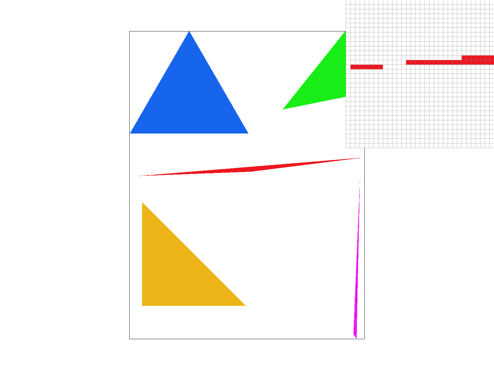
|
Task 2: Antialiasing by Supersampling
Supersampling counters aliasing, which occurs when high-frequency details are mapped to lower-resolution pixels, causing artifacts like jaggies. This happens because the pixel grid can't capture fine details. Supersampling improves image quality by sampling multiple points within each pixel at a higher resolution and averaging the results, reducing aliasing effects and creating a smoother, more accurate image. In my supersampling algorithm, the idea was to zoom in on the pixel grid by increasing the sample rate, i.e., the number of subpixels sampled per pixel. These multiple samples are then averaged to produce a final color for the pixel, smoothing out jaggies and insufficient resolution. By increasing the number of samples per pixel, supersampling allows finer details to be captured, reducing aliasing and providing a more accurate representation of the scene. In the rasterization pipeline, there are a few modifications I made. Increased the sample buffer’s size according to the chosen sample rate. This captures more high resolution details of the scene Supersampling requires the sampling of multiple points within the pixel area. Therefore, the point-in-triangle test is done multiple times per pixel. Then these different values (colors) are averaged out. The use of supersampling for antialiasing was beneficial for rendering triangles with sharp edges. Without supersampling, these edges would become jaggies (as shown in task 1) but by sampling multiple subpixels and averaging the results, the edges got smoothed out. This reduces aliasing. The images from left to right are where sample_rate = 1, sample_rate = 4, sample_rate = 16.
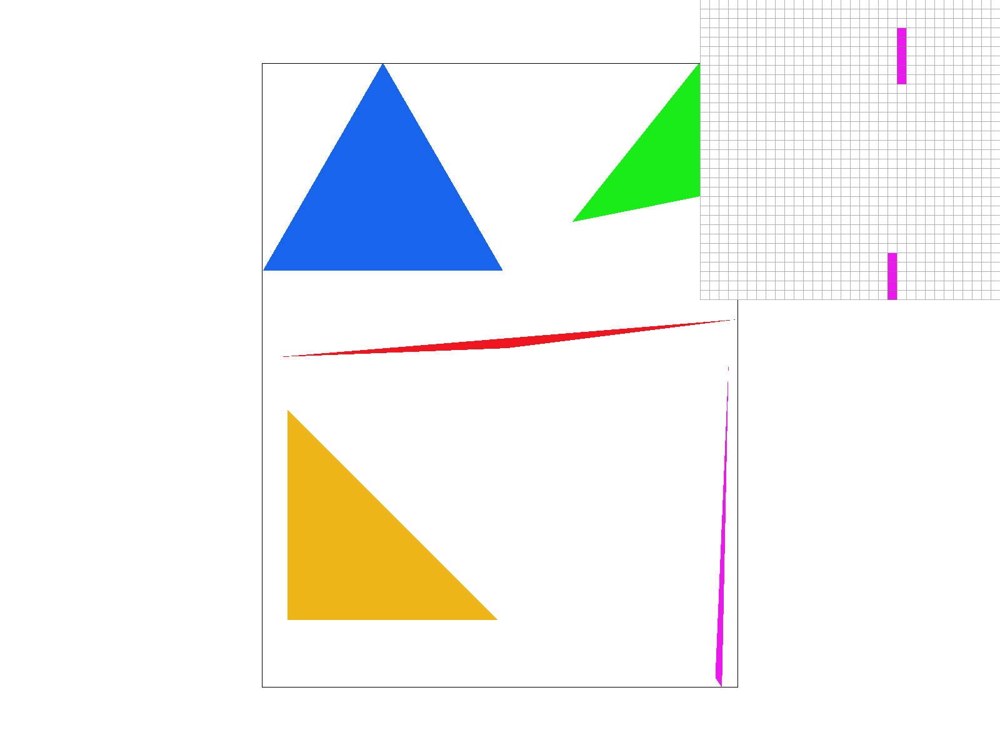
sample_rate = 1. same output as in task 1.
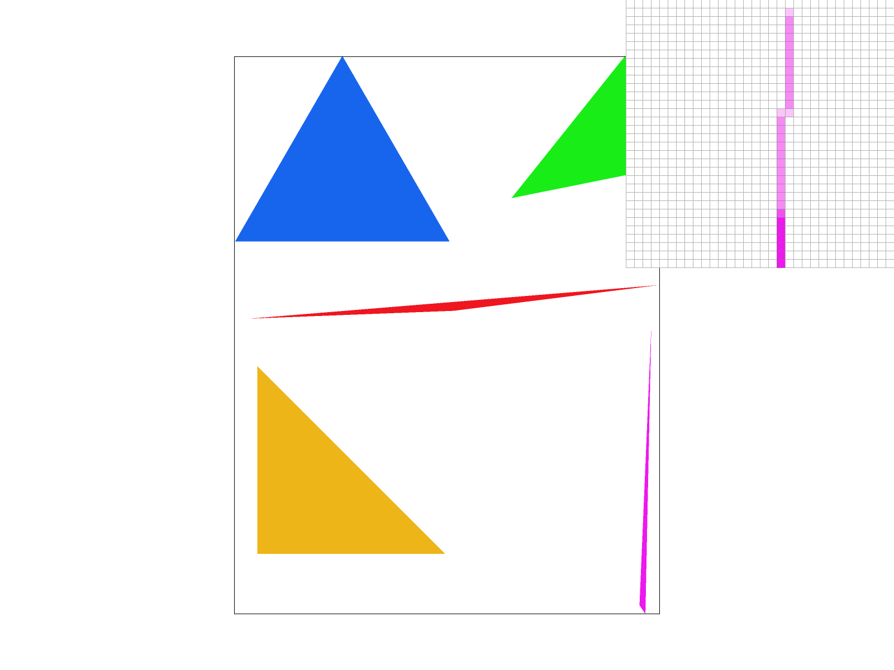
sample_rate = 2. You start to see different shades of pink. No empty pixels.
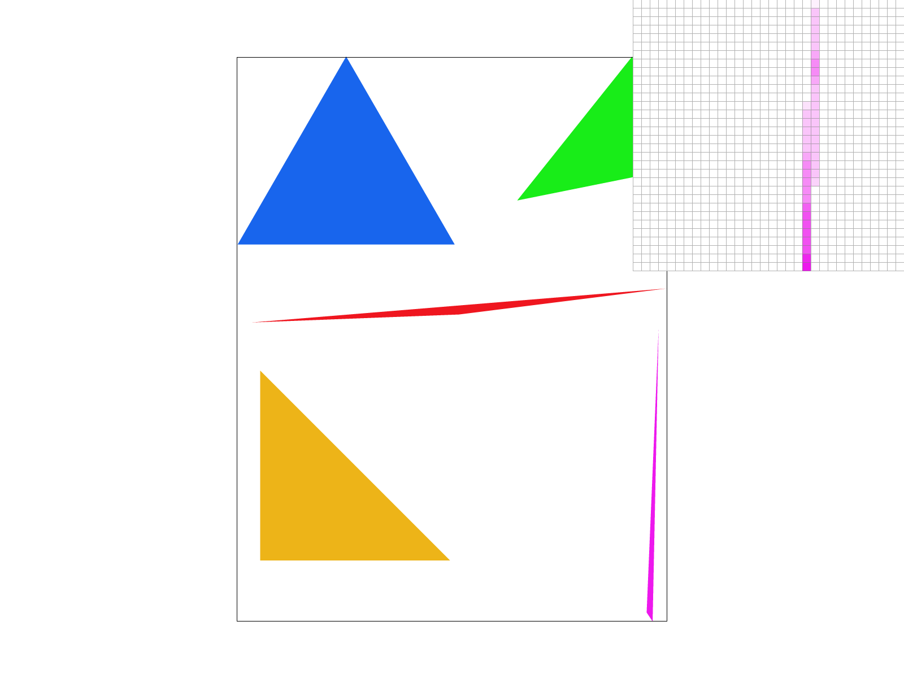
sample_rate = 3. Less empty pixels than the last. More nuanced shading.
Task 3: Transforms
|
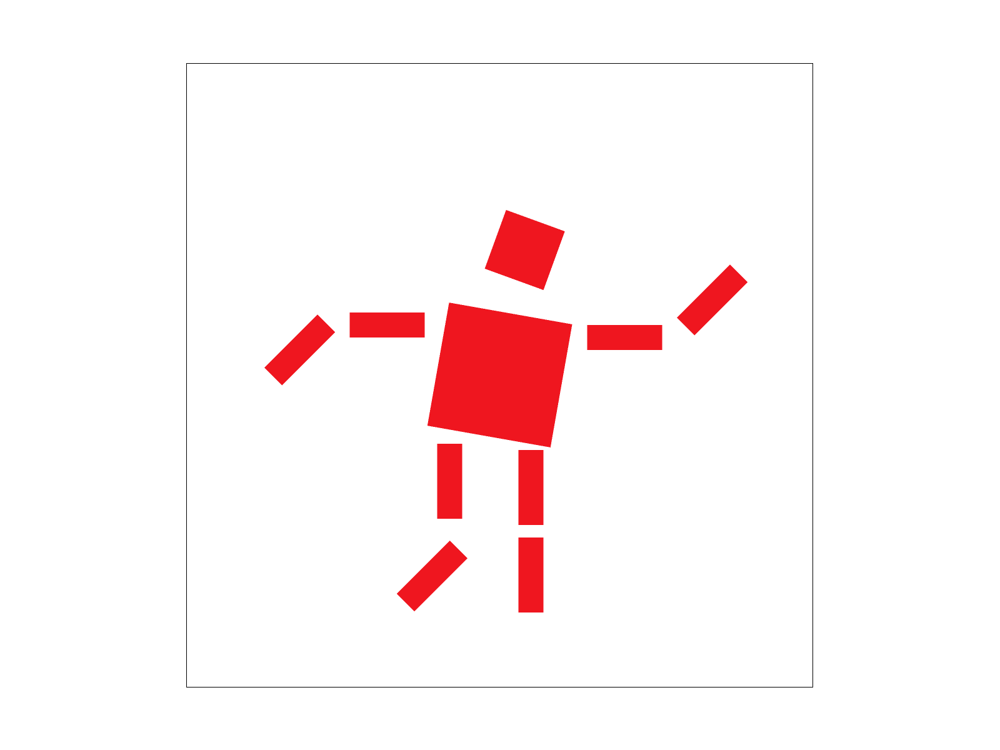
|
Task 4: Barycentric coordinates
Barycentric coordinates express a point as a weighted combination of the triangle's vertices. ɑA + βB + ƔC = P, where A, B, and C are the vertices, and ɑ, β, and Ɣ are the barycentric coordinates. Barycentric coordinates are useful for interpolating attributes (e.g., color, depth, texture) across a triangle. In color interpolation, each vertex of the triangle is assigned a color, and the color at any point inside the triangle is computed as a weighted sum of the vertex colors using the barycentric coordinates. These coordinates are useful for interpolation because they smoothly transition values across the triangle. For color interpolation, each vertex has a predefined color, and the color at any point inside the triangle is calculated as a weighted sum of the vertex colors: Color(P) = α * C_A + β * C_B + γ * C_C where C_A, C_B, C_C are the colors at the triangle’s vertices. The closer a point is to a particular vertex, the larger the corresponding barycentric coordinate, meaning the point takes on more of that vertex’s color. For example, if a point is very close to the red vertex, its α value will be high, making the color appear more red. A point exactly in the center of the triangle will have equal barycentric coordinates and will appear as a balanced mix of all three vertex colors. For example, if the vertices of a triangle are colored red, green, and blue, then a point inside the triangle will have a color that is a blend of these three. A point closer to the red vertex will have a higher 𝛼 α value, making it appear more red. A point equidistant from all three vertices will have equal barycentric coordinates, resulting in a balanced mix of red, green, and blue (e.g., white or gray).In the following example one can see what I have described above:
|
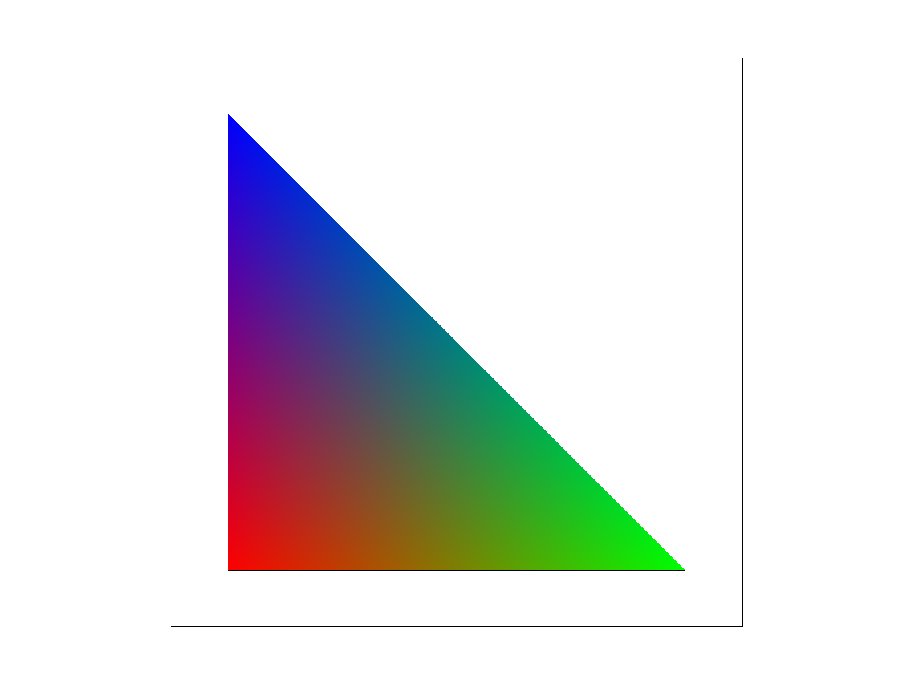
|

|
Task 5: "Pixel sampling" for texture mapping
Pixel sampling is a technique used to determine the color of a pixel during the rendering process. In the context of texture mapping, pixel sampling is used to figure out what color to assign to each pixel based on the texture image. Instead of just using a single value for each pixel, sampling allows us to evaluate how a texture should look when it’s mapped onto a surface or shape especially when the texture has finer details or is stretched across an area. In my implementation, I used pixel sampling to map the texture coordinates (u, v) onto the triangle being rendered. These texture coordinates correspond to specific points on the texture image, and to find the color at those points, I sampled the texture image. Depending on the method used, the way I get the final color value from the texture image can differ. In nearest neighbor sampling for each texture coordinate (u, v), the method selects the nearest pixel from the texture image. For example, if I map (u, v) to a floating-point value, it rounds to the nearest integer and fetch the color from that pixel. The result is relatively more pixelated, as you can see in the below examples, especially when the texture is stretched across a large surface or at a distance. Bilinear sampling improves on nearest-neighbor because it averages the colors of the four nearest pixels in the texture image. It looks at the four adjacent pixels surrounding the texture coordinate and computes a weighted average based on the distance between the texture coordinate and these four pixels. This creates smoother transitions and eliminates the sharp blockiness of nearest-neighbor sampling, producing a more realistic texture.Sample per pixel = 1
|
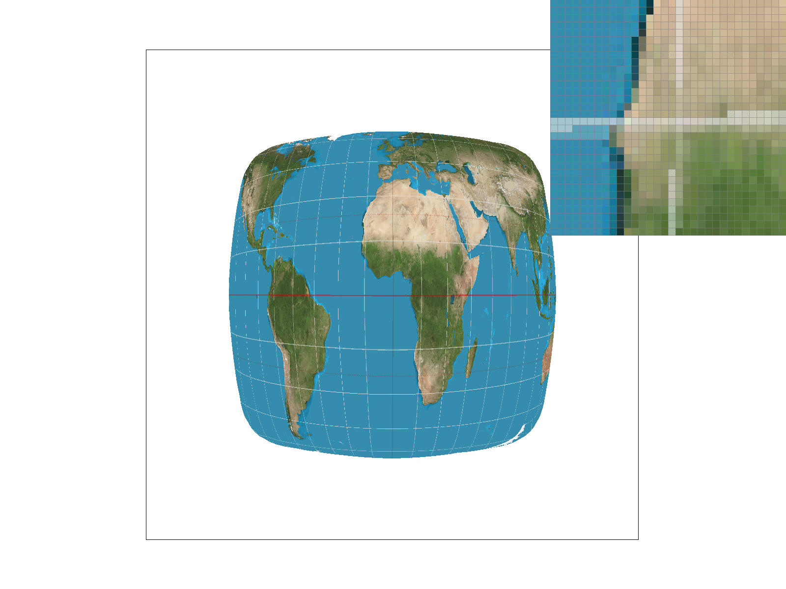
|
|
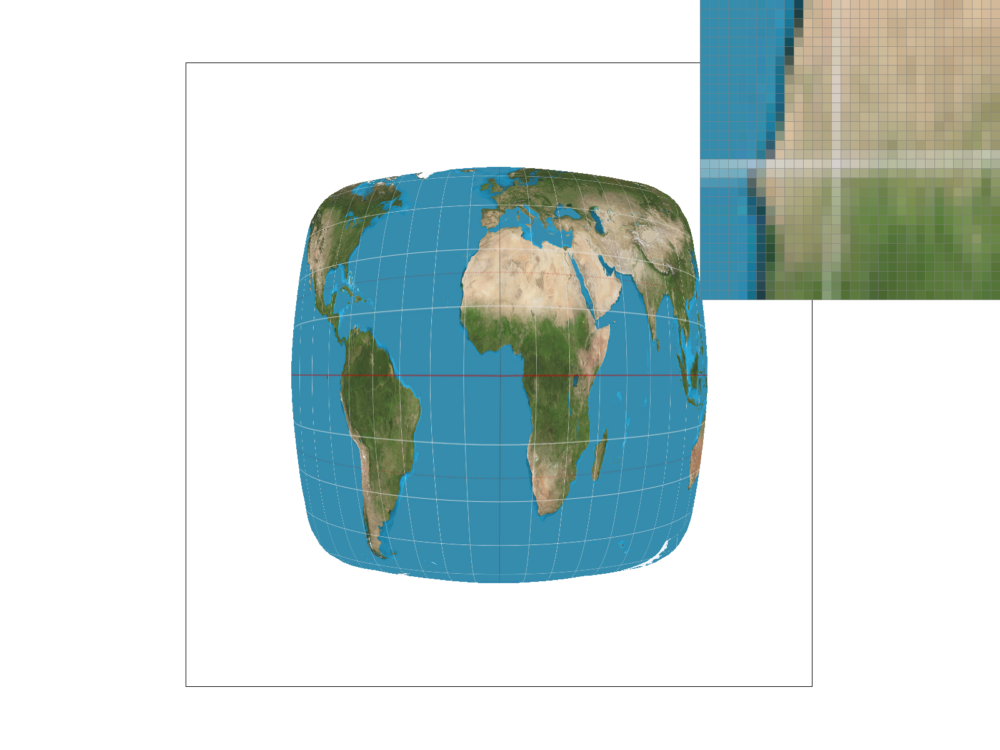
|
Sample per pixel = 16
|
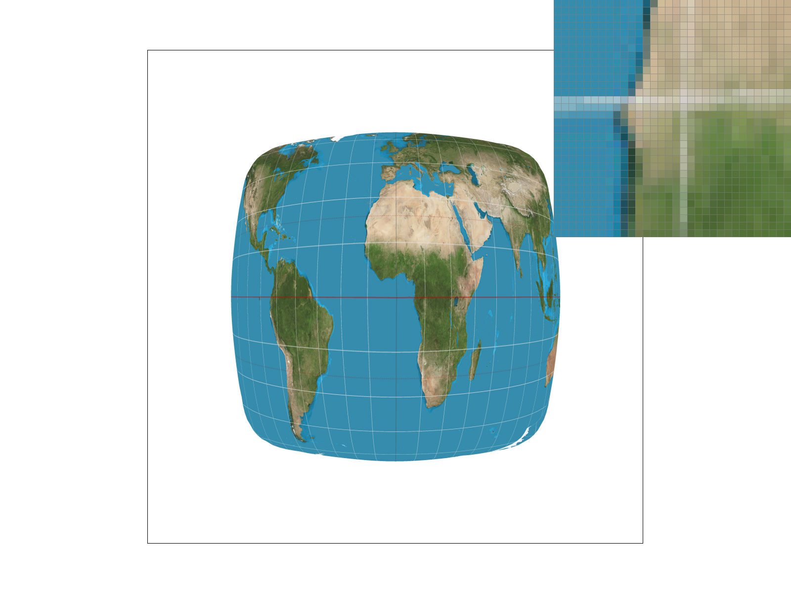
|
|
|
Task 6: "Level Sampling" with mipmaps for texture mapping
Level sampling is the process of determining which mipmap level of a texture to sample from during rendering based on the size of the texture’s footprint on the screen. In texture mapping, objects that are far away appear smaller so using a lower-resolution mipmap level helps improve performance and reduce aliasing. However, for objects that are close to the camera, higher-resolution mipmaps preserve the detail of it. I implemented level sampling by dynamically selecting the appropriate mipmap level based on the texture’s screen-space size. First, I calculated the differential in UV coordinates (using p_dx_uv and p_dy_uv), which gives the rate of change in texture space across the screen. This information is then used to figure out the mipmap level by taking the maximum of the UV differentials, calculating the log of the value to get the level of detail, and then also clamping it to valid mipmap levels. For Level Zero, I always used the base texture, while for Nearest Level, I rounded the calculated level to the nearest integer. Bilinear interpolation blends two mipmap levels based on their proximity to the computed level. This ensures that the texture is sampled efficiently at different levels of detail depending on the pixel's screen size and the viewer's distance. When adjusting sampling techniques like level zero, bilinear interpolation, or nearest level, there are tradeoffs in terms of speed, memory usage, and power. Level zero sampling, which uses the base level of the texture without mipmaps, is the fastest because it avoids the need to calculate which mipmap level to sample from. However, it offers the least antialiasing power and can result in aliasing or blurry textures when viewed at different scales. Bilinear interpolation provides smoother transitions between texels by blending four adjacent texels, improving visual quality at the cost of additional computations and memory usage. Nearest level sampling uses a single mipmap level and the nearest texel to the sample point, which is more memory-efficient than bilinear interpolation and faster than sampling multiple levels. However, it may introduce visible artifacts like pixelation or jaggies, especially at lower levels of detail. Each technique offers different benefits depending on the desired balance between performance and visual quality.
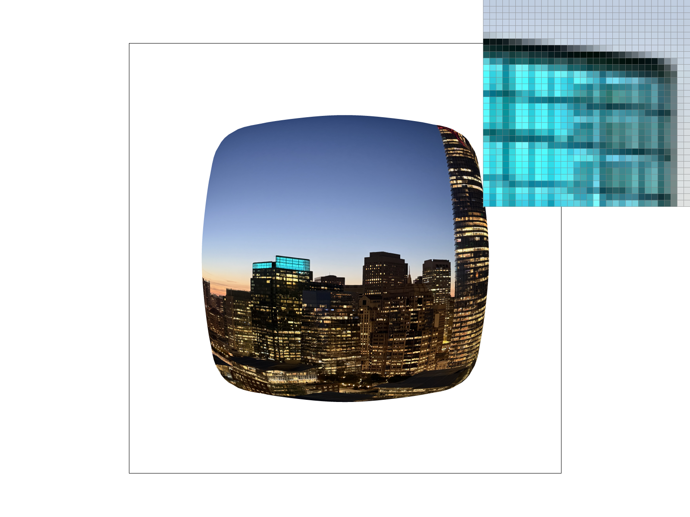
L Zero and P Nearest.
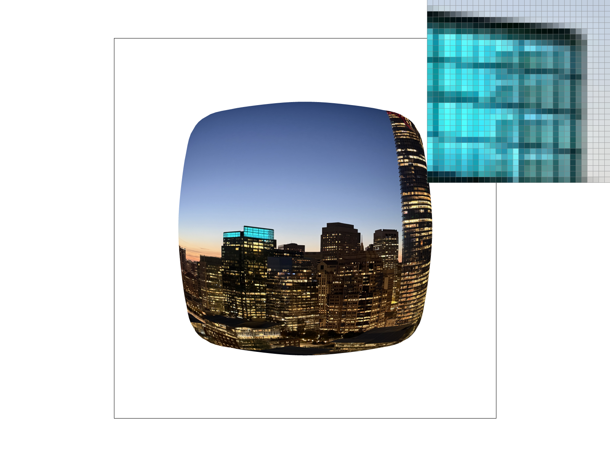
L Zero and P Linear.
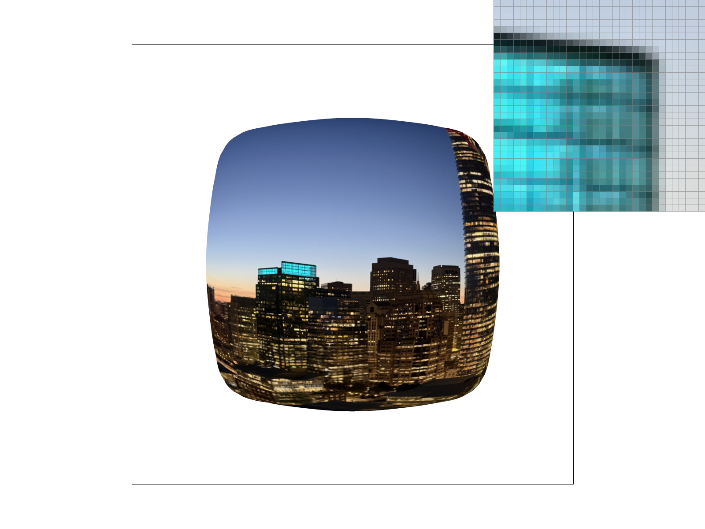
L Nearest and P Linear.